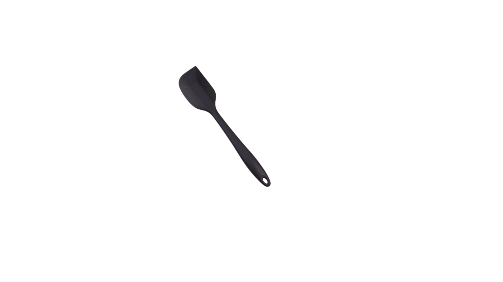

Bolo de Milho

Ingredientes
- 3 espigas de milho verde (ou 1 lata de milho)
- 4 ovos grandes
- 1 xícara (chá) de leite (240 ml)
- 1/2 xícara (chá) de óleo vegetal (120 ml)
- 1 xícara (chá) de açúcar (200g)
- 1/2 xícara (chá) de fubá fino (75g)
- 50g de queijo parmesão ralado (opcional, mas dá um toque especial)
- 1 colher (sopa) de fermento em pó
- 1 pitada de sal
Utensílios

Liquidificador
Pincel de silicone

Espátula de silicone

Forma de bolo
Ao clicar em comprar você será redirecionado para o site da Amazon.com.br
Modo de Preparo
- Pré-aqueça o forno a 180°C.
- Unte a assadeira com manteiga ou margarina e enfarinhe com farinha de trigo ou fubá.
- Reserve.
- Se estiver usando milho fresco, debulhe as espigas e as coloque no liquidificador.
- Se for enlatado, escorra bem a água da lata antes de colocar o milho no liquidificador.
- No liquidificador:
- coloque o milho (fresco ou enlatado), os ovos, o leite, o óleo, o açúcar e o queijo parmesão (se for usar).
- Bata bem por cerca de 3 a 5 minutos, até a mistura ficar homogênea e o milho bem triturado. Quanto mais bater, mais cremoso ficará.
- Despeje a mistura batida do liquidificador em uma tigela grande.
- Adicione o fubá e a pitada de sal.
- Misture delicadamente com um fouet ou colher até incorporar bem.
- Por último, adicione o fermento em pó. Misture apenas o suficiente para que o fermento se incorpore à massa.
- Despeje a massa na assadeira untada e enfarinhada.
- Leve ao forno pré-aquecido por aproximadamente 45 a 60 minutos, ou até que a superfície esteja dourada. O tempo pode variar de forno para forno.
- Durante o cozimento, o bolo formará a camada cremosa no fundo e a parte mais consistente em cima.
- Retire o bolo do forno e deixe amornar antes de desenformar. O bolo de milho cremoso é delicioso tanto morno quanto frio.
- Bom apetite !!